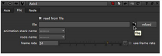

用导航打开主题
从 FBX 文件导入转换
FBX 是一种标准的 3D 文件格式，它允许您访问在支持相同格式的其他应用程序中创建的 3D 场景。你通常在一个
。Fbx
文件是一个完整的 3D 场景，包含相机、灯光、网格、非均匀有理 b样条 (NURBS) 曲线、变换、材质等。从这个场景中，您可以将相机、灯光、变换和网格提取到
Nuke
。这样，您可以，例如，在 Maya 中创建变换，将其导出到
。Fbx
文件，并在中再次使用相同的转换
Nuke
.
注意:
中使用的 FBX SDK 版本
Nuke
,请参见
第三方库版本
.
提示:
如果你有麻烦
。Fbx
文件，这可能是因为它们是用旧版本的 FBX 编写的。如果它们加载得非常慢，也可能是 ASCII 而不是二进制。要解决这些问题，可以在 Autodesk 网站上使用 FBX 转换器 (
Http://usa.autodesk.com/fbx/download/
)。它在各种不同格式之间进行转换，包括较旧的 FBX 版本、 ASCII 和二进制格式，并可在 Windows 、 Mac OS X 和 Linux 上使用。
从导入转换。Fbx 文件
轴节点从 FBX 文件中读取变换、标记和空值 (定位器)。您可以使用它为每个轴节点导入一个变换、标记或 null。
从导入转换。Fbx 文件:
|
|
1。
|
选择
3D
>
轴
在脚本中插入轴节点。将轴节点连接到场景节点。
|
|
|
2.
|
在轴控制中，选中
从文件中读取
。这使控制
文件
选项卡，允许您从
。Fbx
文件。它还禁用从中填充值的控件
。Fbx
文件。只要
从文件中读取
如果选中，则不能修改这些值。但是，您可以查看它们并在表达式中使用它们。这些值从
。Fbx
每次节点被实例化时，您在
。Fbx
文件的值反映在轴控件中。
|

|
|
3.
|
在
文件
选项卡上，单击文件夹图标以打开文件浏览器。导航到
。Fbx
包含要使用的转换的文件。单击
打开
.
|
|
|
4.
|
从
动画堆栈
下拉菜单中，选择是否要用的
。Fbx
文件。FBX 文件支持多个拍摄，其中一个通常是没有动画的默认拍摄。
|
|
|
5.
|
从
节点名称
下拉菜单中，选择的变换，标记，或空要导入的
。Fbx
文件。
|
|
|
6.
|
如果你不想使用的帧速率
。Fbx
用于采样动画曲线的文件，在
帧速率
字段中，输入新值 (每秒帧数)。覆盖中定义的帧速率
。Fbx
文件并使用您在这里定义的文件，检查
使用帧速率
.
|
|
|
7.
|
如果要修改从导入的变换属性。Fbx 文件，取消选中
从文件中读取
在
轴
Tab 并进行必要的修改。只要
从文件中读取
如果未选中，则保留您的更改。
|
|
|
8。
|
从中重新加载变换属性
。Fbx
文件，确保
从文件中读取
选中并单击
重新加载
按钮上
文件
标签。
|